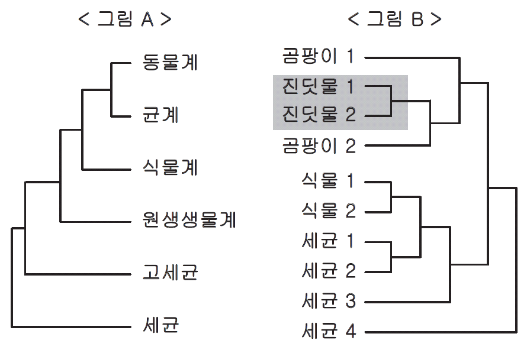

문제 1
생태계에는 생물들이 모여 경쟁, 공생, 기생, 분서, 피식과 포식 등 다양한 상호작용을 하며 살아가고 있다. 이 과정에서 단순히 돌연변이에 의해 새로운 유전자를 획득하기도 하고, 다른 생물로부터 유전자를 획득하기도 한다. 최근에는 이와 관련하여 다양한 상호작용 기전들이 분자 수준에서 밝혀지고 있다.
1-1
원핵세포에서 진핵세포로의 진화 과정에서 미토콘드리아와 엽록체의 기원에 대한 가장 유력한 가설은 세포내공생설이다. 이 가설을 입증할 증거를 제시하고, 미토콘드리아와 엽록체를 획득했을 때 진핵생물이 얻게 된 진화적 이점을 설명하시오.
1-2
카로티노이드는 붉은색의 화합물로 식물, 곰팡이, 원핵생물 등에서 만들어지는 것으로 알려져 왔다. 최근 붉은색과 녹색의 다형성을 띠는 일부 진딧물에서도 만들어지는 것으로 확인되었고, 진딧물의 유전체 분석 결과 카로티노이드생성유전자가 있음이 밝혀졌다. 카로티노이드생성유전자에 대한 계통분석 결과 <그림 B>와 같은 계통도를 얻었다. <그림 A>의 생물계통도를 참고하여 카로티노이드생성유전자의 진화 과정을 설명하고, 이 유전자가 진딧물 1과 2에게 어떠한 이점을 제공할 수 있는지 추측해 보시오.

<그림 B>에서의 숫자는 다른 종을 의미한다.